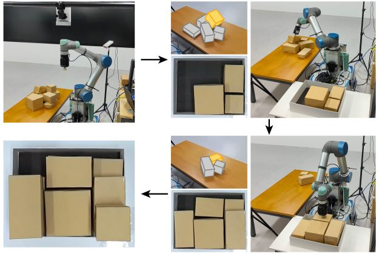
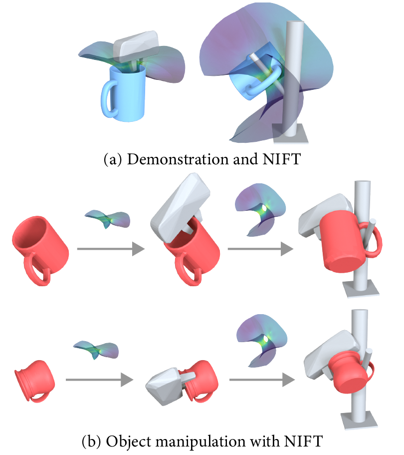
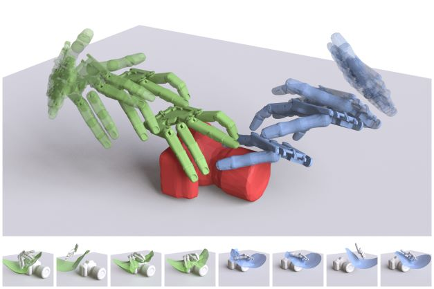
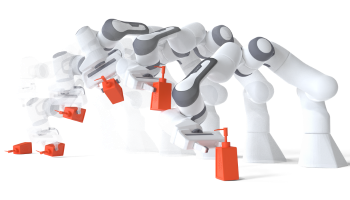
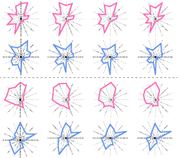
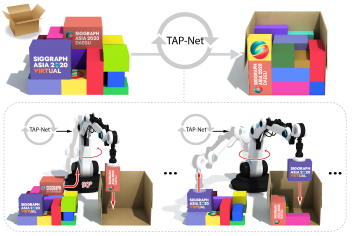

👋Hi there, I am Juzhan Xu(许聚展)
- 🔭 I’m currently a Ph.D. student in Computer Science supervised by Prof. Ruizhen Hu, working in Visual Computing Research Center, Shenzhen University.
- 🌱 I am interested in Computer Graphics, Robotics and Reinforcement Learning.
- 🪵 I am also learning about blender.
Research
Neural Packing: from Visual Sensing to Reinforcement Learning
Juzhan Xu, Minglun Gong, Hao Zhang, Hui Huang and Ruizhen Hu
ACM Transactions on Graphics (Proc. SIGGRAPH Asia), 42(6), 2023.
A novel learning framework to solve the transport-and-packing (TAP) problem in 3D.

NIFT: Neural Interaction Field and Template for Object Manipulation
Zeyu Huang, Juzhan Xu, Sisi Dai, Kai Xu, Hao Zhang, Hui Huang and Ruizhen Hu
IEEE International Conference on Robotics and Automation (ICRA), 2023.
We introduce NIFT, Neural Interaction Field and Template, a descriptive and robust interaction representation of object manipulations to facilitate imitation learning.

Learning High-DOF Reaching-and-Grasping via Dynamic Representation of Gripper-Object Interaction
Qijin She, Ruizhen Hu, Juzhan Xu, Min Liu, Kai Xu and Hui Huang
ACM Transactions on Graphics (Proc. SIGGRAPH), 41(4): 97, 2022.
We approach the problem of high-DOF reaching-and-grasping via learning joint planning of grasp and motion with deep reinforcement learning.

UprightRL: Upright Orientation Estimation of 3D Shapes via Reinforcement Learning
Luanmin Chen, Juzhan Xu, Chuan Wang, Haibin Huang, Hui Huang and Ruizhen Hu
Computer Graphics Forum (Proc. Pacific Graphics), 2021.
In this paper, we study the problem of 3D shape upright orientation estimation from the perspective of reinforcement learning.

Shape-driven Coordinate Ordering for Star Glyph Sets via Reinforcement Learning
Ruizhen Hu, Bin Chen, Juzhan Xu, Oliver van Kaick, Oliver Deussen and Hui Huang
IEEE Transactions on Visualization and Computer Graphics, 2021.
We present a neural optimization model trained with reinforcement learning to solve the coordinate ordering problem for sets of star glyphs.

TAP-Net: Transport-and-Pack using Reinforcement Learning
Ruizhen Hu, Juzhan Xu, Bin Chen, Minglun Gong, Hao Zhang and Hui Huang
ACM Transactions on Graphics (Proc. SIGGRAPH Asia), 42(6), 2020.
We introduce the transport-and-pack (TAP) problem, a frequently encountered instance of real-world packing, and develop a neural optimization solution based on reinforcement learning.